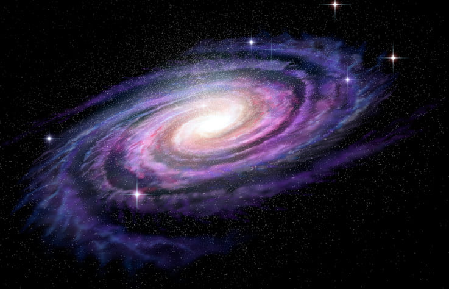
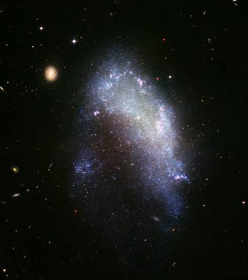
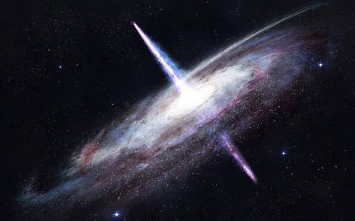
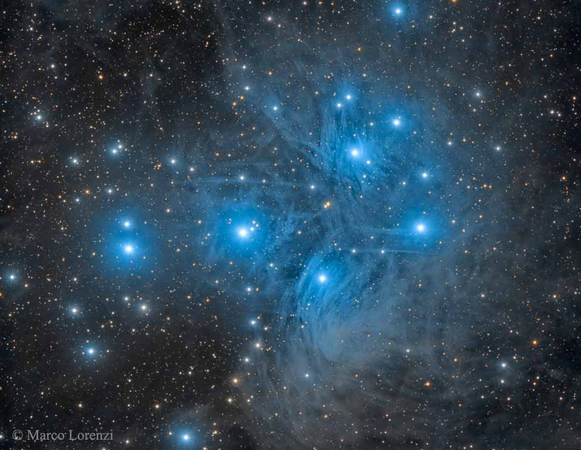
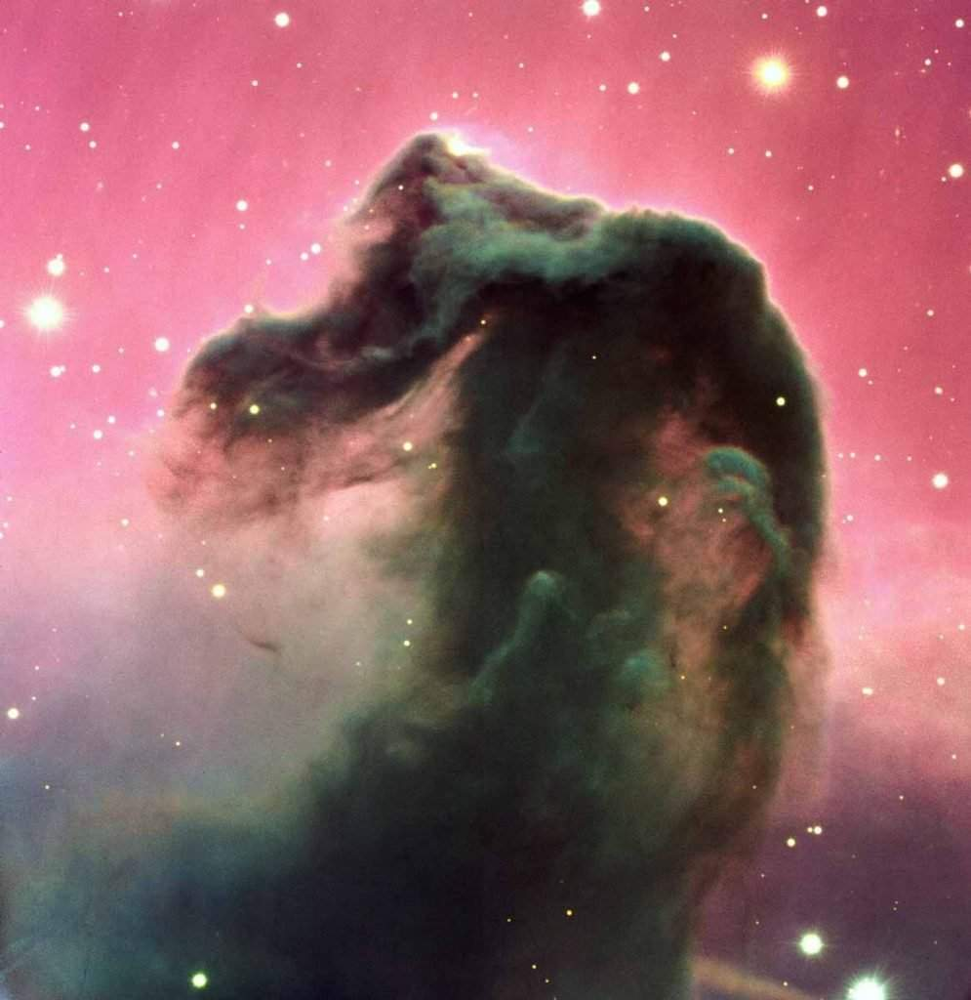

Galaxias en espiral parecen a gigantescas molinetes.
Los brazos del molinillo están compuestos de estrellas
y un montón de gas y polvo. El gas y el polvo son algunos
de los ingredientes principales necesarios para formar
nuevas estrellas. Las estrellas jóvenes queman mucho más
caliente que las estrellas más viejas, así que las galaxias
espirales son a menudo algunas de las más brillantes en el
universo. Alrededor del 60% de las galaxias cercanas son espirales.
Nuestra galaxia, la Vía Láctea, es un muy buen ejemplo de una.
Galaxias elípticas tienen forma de círculos
estirados o elipses. Algunas galaxias elípticas están más estiradas
que otras. Uno puede parecer casi perfectamente circular. Otro podría
parecer largo y plano. Las galaxias elípticas contienen principalmente
estrellas más viejas. Esto significa que a menudo no son tan brillantes
como las galaxias espirales. También tienen muy poco polvo y gas.
Las galaxias elípticas son las más grandes y están entre las más comunes
observadas. Constituyen alrededor del 20% de todas las galaxias cercanas.


Galaxias irregulares son sólo eso: irregular. No tienen
ni una sola forma común. Las galaxias irregulares están entre las galaxias
más pequeñas que los científicos han observado. Sin embargo, también pueden
ser muy brillantes. Al igual que las galaxias espirales, las galaxias
irregulares suelen estar llenas de gas, polvo y muchas estrellas jóvenes
brillantes. Alrededor del 20% de las galaxias cercanas son galaxias irregulares.
Quásares son áreas compactas en el centro de una galaxia.
Ellos emiten enormes cantidades de energía. Los quásares son en realidad
algunos de los objetos más brillantes del universo. No hay cuásares cerca
de nuestra Vía Láctea.

Aqui hay algunos tipos de nabulosas
Las nebulosas de emisión son aquellas que brillan con luz propia.
Las estrellas cercanas excitan el gas de la nebulosa, provocando su ionización.
Estas nebulosas son generalmente las más brillantes y espectaculares. Su forma
es irregular, pero siempre aparecerán rodeadas de estrellas.
Las nebulosas de reflexión no reciben suficiente energía de las
estrellas cercanas como para emitir luz propia. Sin embargo, sí que son capaces
de reflejar la luz de las estrellas próximas.Este tipo de nebulosas no son tan
brillantes, por lo que suelen resultar más difíciles de observar.


Las nebulosas obscuras no están asociadas a ninguna estrella.
Por tanto, no están ionizadas ni reflejan la luz de ningún astro. Así pues,
una nebulosa oscura es una zona de gas y polvo interestelar que no brilla ni
emite luz. A través del telescopio aparecerá como una región oscura que oculta
las estrellas o el gas que tiene detrás.
Las nebulosas planetarias son muy diferentes al resto de
nebulosas debido a su origen. Sin embargo, son nebulosas de emisión, ya que la
nube de gas brilla por sí misma al estar ionizada por la energía que emite los
restos (enana blanca) de la estrella que las genera.Estas nebulosas son, por
tanto, mucho más pequeñas y menos brillantes.